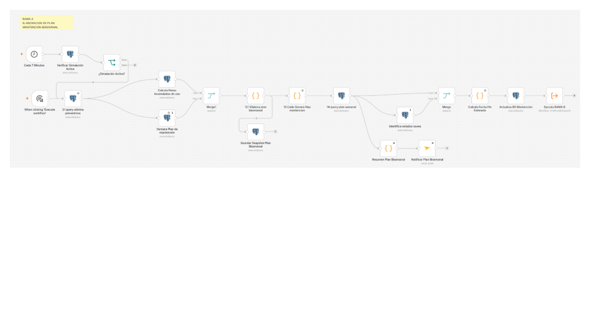
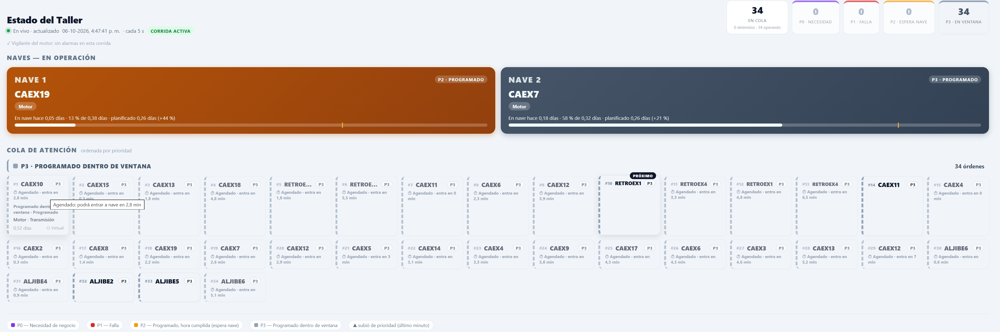
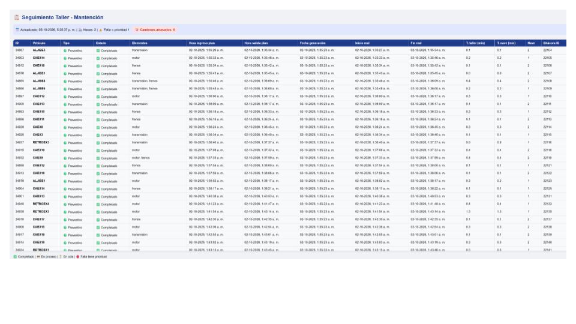
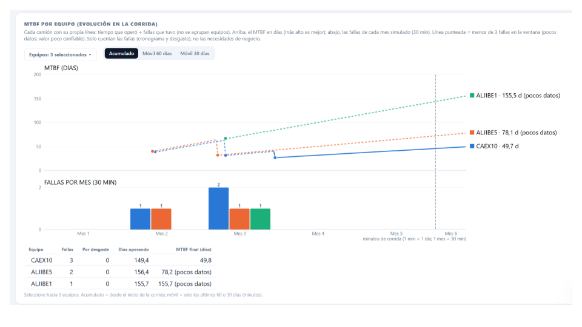
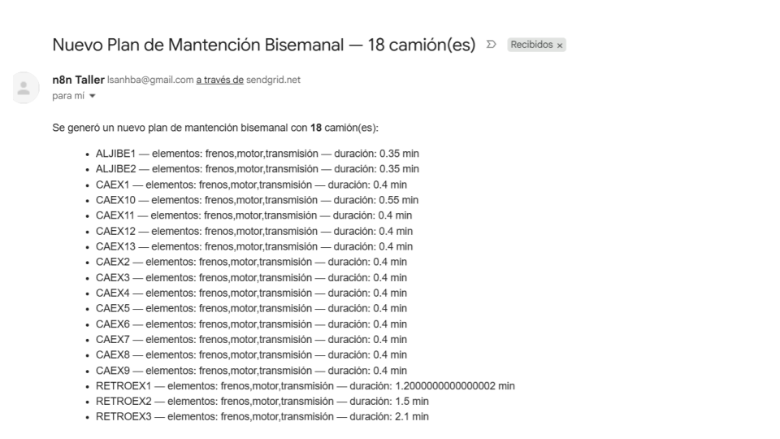
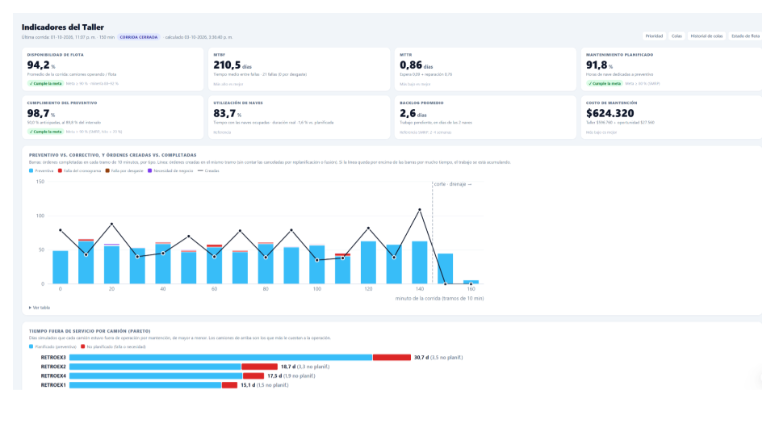
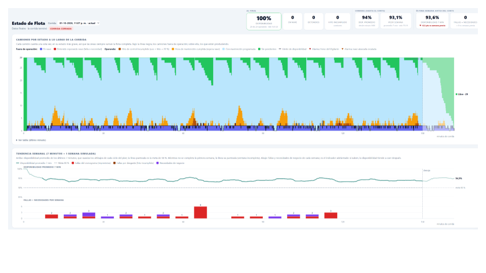
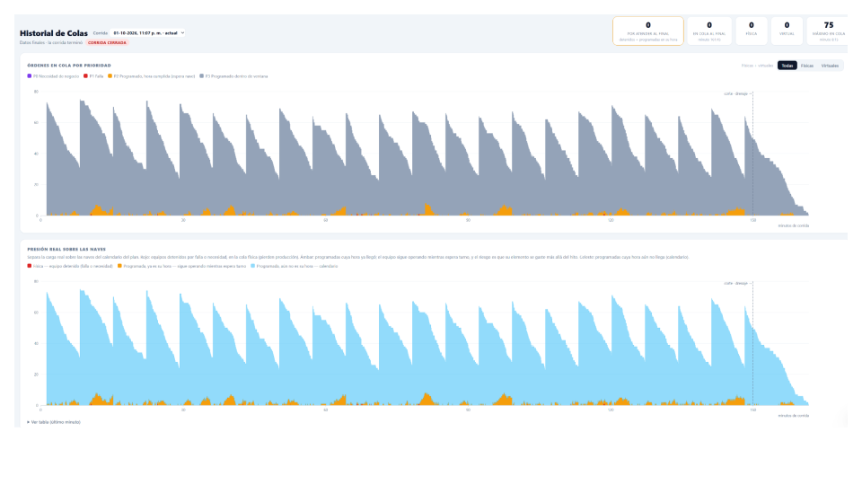

Cuatro mecanismos inteligentes para su taller de mantenimiento
Implementamos mecanismos que automatizan los procesos críticos del ciclo de mantenimiento de equipos industriales y asisten a su equipo mediante un Agente IA conversacional. Se instalan sobre su operación real, adaptándose a los sistemas existentes cuando es técnicamente viable.
El plan se hace a mano
Depende de la memoria del planificador, planillas Excel y revisiones manuales. Se omiten componentes, se atrasan hitos y no hay trazabilidad.
Priorización subjetiva
Se atiende por orden de llegada o presión del momento, no por costo de oportunidad. Cada turno prioriza distinto.
Información dispersa
Estado del taller, historial, costos y KPIs viven en sistemas distintos. Cruzar fuentes toma horas que nadie tiene.
Reportes consumen tiempo
El jefe de taller dedica horas a preparar informes. Los hitos clave se comunican por WhatsApp, sin trazabilidad.
Elaboración automática del plan de mantención
- Plan sin omisiones de componentes ni atrasos de hitos.
- Trazabilidad de por qué cada componente entra al plan.
- Cumplimiento del preventivo medible y auditable.
- Menor costo de mantenimiento correctivo: las fallas no planificadas bajan.
- Mayor disponibilidad de equipos: más horas de operación efectiva.
- Reducción del costo total de mantenimiento.
- Menor exposición a incumplimientos de contrato o SLAs.
Priorización y asignación de órdenes de trabajo
- Recursos asignados a lo que genera mayor valor.
- Consistencia entre turnos: misma regla, misma decisión.
- Registro auditable de cada decisión.
- Menor costo de oportunidad: recursos a los equipos que más producen.
- Mayor throughput del taller sin aumentar dotación.
- Reducción del backlog y menos horas extra.
- Menor exposición a multas por priorización inconsistente.
Agente IA de apoyo a decisiones
- Menos horas gerenciales en buscar información y cruzarla manualmente.
- Decisiones fundadas en distribuciones, no en estimaciones aisladas.
- Reducción del riesgo de decisiones subóptimas, cuantificada antes de aprobar.
- Trazabilidad completa de cada decisión y su justificación.
Notificaciones automáticas y dashboards
- Reportes automáticos a gerencia sin redacción manual.
- Coordinación efectiva entre mantención y operaciones.
- Trazabilidad completa de los hitos del ciclo.
- Dashboards multi-nivel: taller, ejecutivo, planificación, What-If.
- Reducción de 4–8 horas semanales administrativas del jefe de taller.
- Eliminación de retrabajo por descoordinación.
- Menor exposición a incumplimientos de reportabilidad.
- Base para decisiones de inversión con datos trazables.






Sistema de Gestión de Mantenimiento con IA
Construimos un sistema de gestión de mantenimiento a medida, modelado sobre la operación específica del cliente, que incorpora los cuatro mecanismos asistidos por IA. La solución se integra con los sistemas existentes cuando es técnicamente viable, y se despliega de forma independiente cuando el cliente lo prefiere.
- Base de datos de activos
- Motor de planificación
- Motor de priorización y asignación
- Registro de ejecución (bitácoras)
- Notificaciones automáticas
- Dashboards de seguimiento
- Agente IA conversacional
- Reportes y KPIs
Sistema de simulación complementario
Implementamos un modelo de simulación que replica la operación del cliente y permite evaluar criterios alternativos de planificación y priorización antes de aplicarlos en la operación real. Consume datos históricos de los sistemas existentes cuando es técnicamente viable.
- Modelo de simulación del taller
- Motor de simulación de escenarios
- Comparador de KPIs (simulado vs real)
- Agente IA de análisis
- Dashboard de escenarios
- Integración con sistemas existentes
Implementación modular
Si su empresa ya cuenta con una plataforma de gestión y solo requiere fortalecer componentes específicos, implementamos módulos individuales que se integran con lo existente cuando es viable.
- Motor de elaboración del plan
- Motor de priorización de OT
- Dashboards específicos
- Agente IA con prompts validados
- Sistema de notificaciones
- Módulo de simulación
Agentes IA conversacionales
No solo dashboards: responde preguntas en lenguaje natural.
Prompts validados
El Agente IA cuenta con prompts probados, adaptables al cliente.
Notificaciones en cada hito
Emisión de plan, recepción de falla, término de trabajo.
Dashboards multi-nivel
Cuatro vistas: taller, ejecutivo, planificación y What-If.
Priorización por valor
Costo de oportunidad y duración del trabajo, no orden de llegada.
Análisis What-If
Permite evaluar decisiones antes de aplicarlas.
Implementación a medida
Construido desde cero para cada cliente.
Stack agnóstico
Sin dependencia tecnológica específica. Se adapta a lo que el cliente tenga o prefiera.
Orquestación visual de workflows (low-code) — modela procesos complejos sin desarrollo extensivo de código, integrando fuentes de datos y reglas de negocio.
Base de datos relacional + búsqueda semántica — persistencia robusta y recuperación inteligente de información histórica y documental.
Modelos de lenguaje de última generación (LLM) — para el agente IA conversacional, configurados con prompts validados y operación controlada.
Embeddings para búsqueda semántica — recuperación de casos históricos y documentación técnica del activo.
Diseñemos una propuesta a la medida de su operación
Hemos construido y probado los cuatro mecanismos fundamentales de gestión inteligente de mantenimiento. Ofrecemos tres modalidades de implementación, adaptables a la realidad y madurez de cada cliente.
El sistema que trabaja con usted en el taller
Cuatro mecanismos que automatizan el trabajo administrativo del taller y un copiloto conversacional que responde en lenguaje natural lo que usted necesita saber. No reemplaza su rol. Lo respalda.
Plan de mantención automático
- Deja de armar el plan. Lo recibe listo y solo lo aprueba.
- Componentes que comparten ventana se agrupan en una sola OT.
- Trazabilidad de cada intervención programada.
- Recupera las horas dedicadas a armar el plan cada semana.
- Menos reclamaciones desde operaciones por omisiones.
- Menos ajustes de último minuto al plan.
Priorización objetiva de órdenes de trabajo
- La cola se ordena sola: fallas → costo de oportunidad → duración del trabajo.
- Consistencia entre turnos: la misma regla aplica siempre.
- Cada decisión queda registrada y auditable.
- Menos tiempo justificando por qué se atendió una OT antes que otra.
- Menos conflictos con producción por priorización.
- Menos backlog acumulado al cierre de la semana.
Copiloto conversacional
- Deja de pedir datos por WhatsApp a otras áreas.
- Deja de esperar reportes de fin de mes para saber cómo va el taller.
- Deja de reconstruir el turno anterior cuando alguien pregunta qué pasó.
Notificaciones automáticas y dashboards
- El informe de cierre ya está listo. Solo lo revisa y firma.
- El equipo ve el estado del taller en pantalla sin preguntar.
- Los hitos clave (plan, falla, cierre) se notifican solos.
- Recupera 4–8 horas semanales dedicadas a preparar informes.
- Deja de coordinar por WhatsApp lo que el sistema ya comunica.
- Deja de reconstruir el turno anterior cuando alguien pregunta.


Su sistema de registro de OT actual
Se mantiene. El sistema de orquestación lee lo que ya existe y agrega inteligencia encima.
Sus mecánicos y técnicos
No cambian su forma de trabajar. Solo el jefe de taller, planificadores y supervisores usan las nuevas interfaces.
Sus criterios operacionales
Las reglas de priorización las definimos juntos en la etapa de modelamiento. No imponemos criterios: los formalizamos.
Conversemos sobre su taller
Agendamos 2 horas de taller de levantamiento donde usted nos cuenta cómo opera hoy, qué le duele y qué esperaría de un sistema. Sin compromiso. Sin acceso a sistemas.